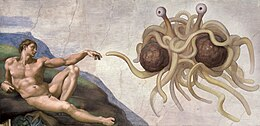
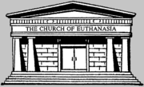
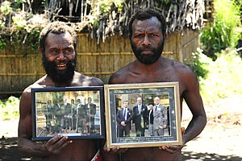
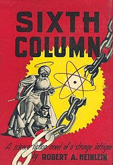

Course: Science Fiction & Religion
Lecture #2: Pseudo-Religion
Pseudo-religion (or pseudo-theology) is a generally pejorative term applied to a non-mainstream belief system or philosophy which is functionally similar to a religious practice, typically having a founder, principal text, liturgy and faith-based beliefs. Belief systems such as Theosophy, corporate Kabbalism, Discordianism, Scientology, and Objectivism, and have all been referred to as pseudo religions. The more serious-minded participants in these groups prefer to consider themselves part of a proper religion, however the mainstream tends to ascribe to them fringe status.
When viewed as dangerous, particular pseudo-religions may be referred to as cults. Innocuous ones-which are often satirical or parodies of traditional beliefs--such as the Church of the SubGenius, the First Presleyterian Church of Elvis, the Divine; or the Church of the Flying Spaghetti Monster, might be considered sub-cultures.
Professor James Carmine, chair of Carlow University's philosophy department, proposes a three-pronged test to distinguish "authentic" religions from pseudo-religions:
1. Any religion lacking a guiding coherent theology is a pseudo-religion.
2. Any religion entirely self-referential is pseudo-religion.
3. Any religion whose only fruit is adherence to itself is pseudo-religion.
NOTE: Highlighted section is “Additional Material – Read only if Time & Interest Permit
Scientology
Scientology is a system of beliefs, teachings, and rituals that originated as philosophy in 1952 by author L. Ron Hubbard, and characterized by the Church of Scientology in 1953 as an "applied religious philosophy". Hubbard defined the word "Scientology" to mean "a study of knowledge."
The term Scientology is a trademark of the Religious Technology Center, which licenses its use and use of the copyrighted works of Scientology Hubbard to the Church of Scientology. The Church presents itself as a religious non-profit organization dedicated to the development of the human spirit and providing counseling and rehabilitation programs. Church spokespeople claim that Hubbard's teachings (called "technology" or "tech" in Scientology terminology) have freed them from addictions, arthritis, depression, learning disabilities, mental illness and other problems.
However, the Church of Scientology has attracted much controversy and criticism. Critics - including government officials of certain countries - have characterized the Church as an unscrupulous commercial organization, and it is accused of harassing critics and exploiting members. Scientology's principles have been characterized as pseudoscientific by many mainstream medical and psychotherapeutic practitioners, and the Church has frequently been characterized as a cult.
Beliefs and practices
Scientology's doctrines were established by Hubbard over a period of about 34 years, beginning in 1952 and continuing until his death in January 1986. Most of the basic principles of the church were set out during the 1950s and 1960s. Scientology followed on the heels of Dianetics, an earlier system of self-improvement techniques laid out by Hubbard in his 1950 book, Dianetics: The Modern Science of Mental Health. By the mid-1950s, Hubbard had relegated Dianetics to a sub-study of Scientology. A chief difference between Dianetics and Scientology is that Dianetics focuses on rehabilitating an individual's mind, giving him full conscious recall of his experiences while Scientology is more concerned with rehabilitating the human spirit.
Scientology also covers topics such as ethics and morality, (The Way to Happiness), drug and chemical residues as they relate to spiritual wellbeing, the (Purification Rundown), communication, marriage, raising children, dealing with work-related problems, educational matters (study technology), and the very nature of life (The Dynamics).
Scientology practices are structured in a series of levels, because Hubbard believed that rehabilitation takes place on a step by step basis. For example, the bad effects of drugs should be addressed before other issues can be addressed. The steps lead to the more advanced strata of Scientology's more esoteric knowledge. This is described as a passage along "the Bridge to Total Freedom", or simply "the Bridge," where each step of the Bridge promises a little more personal freedom in the area specified by the Bridge's definition.
Some central beliefs of Scientology:
- A person is an immortal spiritual being (termed a thetan) who possesses a mind and a body.
- The thetan has lived through many past lives and will continue to live beyond the death of the body.
- A person is basically good, but becomes "aberrated" by moments of pain and unconsciousness in his life.
- What is true for you is what you have observed yourself. No beliefs should be forced as "true" on anyone. Thus, the tenets of Scientology are expected to be tested and seen to either be true, or not, by Scientology practitioners.
Scientology offers an exact methodology to help a person achieve awareness of their spiritual existence and better effectiveness in the physical world. Exact methods of spiritual counseling are taught and practiced which are designed to enable this change. According to the church, the ultimate goal is to get the soul (thetan) back to its native state of total freedom, thus gaining control over matter, energy, space, time, thoughts, form, and life. This freed state is called Operating Thetan, or OT for short.
Auditing
The central practice of Scientology is "auditing" (from the Latin audire,"to listen"), which is one-on-one communication with a trained Scientology counselor or "auditor". The auditor follows an exact procedure toward rehabilitating the human spirit. Most auditing uses an E-meter, a device that measures galvanic skin response.
The auditing process is intended to help the practitioner (referred to as a preclear or PC) to unburden himself of specific traumatic incidents, prior ethical transgressions and bad decisions, which are said to collectively restrict the preclear from achieving his goals and lead to the development of a "reactive mind". The auditor asks the preclear to respond to a list of questions which are designed for specific purposes and given to the preclear in a strictly regulated way. Auditing requires that the preclear be a willing and interested participant who understands the questions, and the process goes more smoothly when he or she understands what is going on. Per Church policy, auditors are trained not to "evaluate for" their preclears; i.e., they are forbidden from suggesting, interpreting, degrading or invalidating the preclear's answers. The E-meter is used to help locate an area of concern.
Scientologists have claimed benefits from auditing including improved IQ, improved memory, alleviated dyslexia and attention deficit problems, and improved relaxation; however, no scientific studies have verified these claims. Indeed, an Australian report stated that auditing involved a kind of command hypnosis that could lead to potentially damaging delusional dissociative states. Licensed psychotherapists have alleged that the Church's auditing sessions amount to mental health treatment without a license, but the Church vehemently disputes these allegations, and claims to have established in courts of law that its practice leads to spiritual relief. So, according to the Church, the psychotherapist treats mental health and the Church treats the spiritual being.
During the auditing process, the auditor may collect personal information from the person being audited in a manner similar to a psychotherapy session. The Church maintains that its auditing records are kept confidential, after the manner of confession in Christian churches. Auditing records are referred within Scientology as "confessional formulary" and stored under lock and key when not being added to during auditing sessions. In some instances, former members have claimed the Church used information obtained in auditing sessions against them. While such a claim would be actionable as extortion, blackmail or harassment within most legal jurisdictions, no such claim has to date been legally confirmed against Scientology based upon use or revelation of auditing records.
The ARC Triangle
Another basic tenet of Scientology is that there are three interrelated (and intrinsically spiritual) components that make up successful "livingness": affinity (emotional responses), reality (an agreement on what is real) and communication (the exchange of ideas). Hubbard called this the "ARC Triangle". Scientologists utilize ARC as a central organizing principle in their lives, primarily based upon the belief that improving one aspect of the triangle increases the level of the other two.
The tone scale
The tone scale is a characterization of human mood and behavior by various positions on a scale. The scale ranges from -40 or "Total Failure" to +40 or "Serenity of Beingness." Positions on the tone scale are usually designated by an emotion, but Hubbard also described many other things that can be indicated by the tone scale levels, such as aspects of an individual's health, sexual behavior, survival potential, or ability to deal with truth. The tone scale is used by Scientologists in everyday life to evaluate people. According to Scientology, the lower the person is on the tone scale, the more complex and convoluted his or her day-to-day problems tend to be, and the more care and judgement should be exercised regarding communication and interchange with the individual.
Past lives
In Dianetics, Hubbard proposed that the cause of "aberrations" in the human mind was an accumulation of pain and unconscious memories of traumatic incidents, some of which predated the life of the individual. He extended this view further in Scientology, declaring that thetans have existed for tens of trillions of years. During that time, Hubbard explains, they have been exposed to a vast number of traumatic incidents, and have made a great many decisions that influence their present state. According to an early lecture of Hubbard's, it is, as a practical matter, both impossible and undesirable to recall each and every such event from such vast stretches of time. As a result, Hubbard's 30-year development of Scientology focused on streamlining of the process to address only key factors. Hubbard stated that Scientology materials as described in books, tapes, and research notes include a record of everything that was found in the course of his research. Not all things found have been experienced by all beings. (For example, not everyone was a Roman, or Chinese, etc, although each was common enough)
According to Hubbard, some of the past traumas may have been deliberately inflicted in the form of "implants" used by extraterrestrial dictatorships to brainwash and control people. Scientology doctrine includes a wide variety of beliefs in extraterrestrial civilizations and alien interventions in Earthly events, collectively described by Hubard as "space opera".
Flying Spaghetti Monster
The Flying Spaghetti Monster is a fictional deity in a satirical religion created by Bobby Henderson in 2005 to protest the decision by the Kansas State Board of Education to require the teaching of intelligent design as an alternative to biological evolution. Henderson professes belief in a supernatural Creator entity that resembles spaghetti and meatballs and suggests that Flying Spaghetti Monsterism should be taught in science classrooms.

The Flying Spaghetti Monster (FSM) has become the center of a phenomenon with followers who call themselves Pastafarians, a play on "Rastafarians." Although "Flying Spaghetti Monsterism" was created as a parody religion, Pastafarians say it is a legitimate one; some argue that the FSM is no more or less fictional than any other deity.
There was a million dollar challenge issued, payable to any individual who could produce empirical evidence proving that Jesus is not the son of the Flying Spaghetti Monster, though Jesus is not a part of, or worshipped in, Flying Spaghetti Monsterism. The challenge is modeled after a similar challenge issued by creationist Kent Hovind, which has been criticized by scientists as being logically flawed in design. The FSM prize was soon raised by matching reward funds to $1 million of "Intelligently Designed currency".
The Gospel
In December 2005, Bobby Henderson received a reported USD $80,000 advance to pen the "Gospel of The Flying Spaghetti Monster,". According to the author, he plans on using the proceeds from the sale of the book to build a pirate ship, with which he may travel the world in order to convert heathens to the Pastafarian faith. The book is due to be released on 14 March 2006 and may now be pre-ordered.
Beliefs
Any of the "beliefs" proposed by Henderson were intentionally chosen to parody arguments commonly set forth by proponents of Intelligent Design. These are the canonical beliefs set forth by Henderson
- An invisible and undetectable Flying Spaghetti Monster created the universe, starting with a mountain, trees and a "midgit" [sic].
- All evidence pointing towards evolution was intentionally planted by this being.
- Global warming, earthquakes, hurricanes, and other natural disasters are a direct consequence of the decline in numbers of pirates since the 19th Century.
- The Flying Spaghetti Monster tests Pastafarians' faith by making things look older than they really are. "For example, a scientist may perform a carbon-dating process on an artifact. He finds that approximately 75% of the Carbon-14 has decayed by electron emission to Nitrogen-14, and infers that this artifact is approximately 10,000 years old, as the half-life of Carbon-14 appears to be 5,730 years. But what our scientist does not realize is that every time he makes a measurement, the Flying Spaghetti Monster is there changing the results with His Noodly Appendage. We have numerous texts that describe in detail how this can be possible and the reasons why He does this. He is of course invisible and can pass through normal matter with ease."
SHOW: YouTube Top 5 Church of the Flying spaghetti monster pads: LINK
Church of Euthanasia
Church of Euthanasia (also known as CoE) is a religious organization founded by Reverend Chris Korda and Pastor Kim (Robert Kimberk) in the Boston, Massachusetts area of the United States of America in 1992.

As stated in the Church's website, it is "a non-profit educational foundation devoted to restoring balance between Humans and the remaining species on Earth" Members of this organization affirm this can only turn into a reality by a massive voluntary population reduction, which will depend on a leap in Human consciousness to species-awareness. According to Rev. Chris Korda it is likely that this Church is the world's only anti-human religion.
Its most popular slogan is "Save the Planet, Kill Yourself" and its founding ideology is set in one commandment "Thou Shalt not Procreate", and four main pillars: suicide, abortion, cannibalism (of the already dead) and sodomy ("any sexual act not intended for procreation"). The Church stresses population reduction by voluntary means only, therefore, murder and involuntary sterilization are strictly forbidden by church doctrine.
The Church promotes its environmental views mainly via their website and the web. They also utilize sermons, art performances, public demonstrations, culture jamming, music, publicity stunts and direct action to highlight Earth's unsustainable population. They consider their methodology similar to those of the Dadaist movement,[8] finding the modern world so absurd that the means needed to reach their message to the public must be absurd themselves.
The Church of Euthanasia is also notorious for its conflicts with pro-life Christian activists.
Slogans employed by the group include "Save the Planet, Kill Yourself", "Six Billion Humans Can't Be Wrong", and "Eat a Queer Fetus for Jesus".
History
The Church gained early attention in 1995 because of its affiliation with paranoia.com which hosted many sites that were controversial or skirted illegality. Members later appeared on an episode of The Jerry Springer Show titled "I Want to Join a Suicide Cult".
Following the September 11, 2001 attacks, the Church posted to its website a four-minute music video titled I Like to Watch, combining hardcore pornographic video with footage of the World Trade Center collapse. The montage featured an electronic soundtrack recorded by Korda and the lyrics, "People dive into the street/ While I play with my meat." Korda described the project as reflecting her "contempt for and frustration with the profound ugliness of the modern industrial world."
The Church's website previously had instructions on "how to kill yourself" by asphyxiation using helium. These pages were removed in 2003 after a 52-year-old woman used them to commit suicide in St. Louis County, Missouri, resulting in legal threats against the church.
Soylent Green
Soylent Green is a classic 1973 science fiction movie starring Charlton Heston, Edward G. Robinson and Chuck Connors. It is credited as being based on the 1966 science fiction novella about overpopulation by Harry Harrison, Make Room! Make Room!, but maintains only a loose structure of that work, and diverges into its own plot points and ideas.
The most common use of the term Soylent Green today is in reference to the fictional food product which is at the center of the film's plot.
Movie
The movie, set in the year 2022, depicts a future dystopia, a Malthusian catastrophe that takes place because humanity has failed to pursue sustainable development and has not halted population growth. Global warming and air and water pollution have produced a year-round heatwave, food and fuel resources are scarce, housing is dilapidated and overcrowded, and widespread government- sponsored euthanasia is encouraged as a means of reducing overpopulation. Charlton Heston plays Robert Thorn, a New York City police detective, investigating the suspicious murder of William R. Simonson (Joseph Cotten), a former member of the board of the Soylent Corporation. Thorn's roommate is Sol Roth (Edward G. Robinson), a onetime college professor who is an elderly police researcher.
In the movie, meat, bread, cheese, fruit and vegetables are scarce and extremely expensive, and the government dispenses rations of synthetic food substances made by the Soylent Corporation: Soylent Yellow, Soylent Red, and the newest product, Soylent Green, the most popular version. As the name suggests, "Soylent" is derived from soybeans and lentils.
Religious institutions have become refugee centers- not functioning. However, during his investigation of the Simonson murder, Thorn uncovers a strange conspiracy, which will be revealed if he sees what goes on behind closed doors at the euthanasia centers. When an elderly and dispirited Sol opts for euthanasia, Thorn forces his way into the euthansia center and makes two shocking discoveries. First, he sees motion pictures of the unspoiled Earth of former times, which are shown only to those about to be euthanized. Thorn is startled to see how beautiful the Earth was before it sank to its current state.
The euthanasia centers are now the functioning religious institutions promise the ultimate in beuty, peace and serenity for the last 10 minutes of life.
Second, when Thorn follows the disposal of Sol's corpse, he discovers that Soylent Green includes the recycled bodies of people who have used government-sponsored euthanasia centers, as well as those killed by the Scoops, converted garbage trucks which literally "scoop" rioting citizens into large holding pens.
Thorn's anguished cry of "Soylent Green is people!" (one of his last lines in the movie) has become an iconic catch phrase and is frequently referenced/parodied in many other works. Reasons for this extensive use in popular entertainment are difficult to pin down to a single explanation. Some "blame" has been pointed to the film's trailer, which indirectly revealed Soylent Green's main ingredient by using quick cuts of body bags being carried across a conveyor belt over spoken narration: "What is the secret of Soylent Green?" The resulting spoiled surprise may have contributed to popular culture's tendency to refer to the movie (see Cultural impact below).
The world of Soylent Green
The world of Soylent Green is complex and detailed. It becomes clear that the culture of Earth is significantly different from the time in which it was filmed.
Trivia
- The original 1966 novella Make Room! Make Room! is set in the year 1999, with the theme of overpopulation and overuse of resources leading to increasing social disorder as the next millennium approaches. It mentions soylent steaks, but makes no reference to "soylent green" or to the ideas of euthanasia and cannibalism which form the basic theme of the movie. The book's title was not used for the movie since it could have confused audiences into thinking it was a big-screen version of Make Room for Daddy.
- This is the last movie filmed by Edward G. Robinson, who died on January 26, 1973, two weeks after he had finished filming.
- A character is briefly seen operating a Computer Space arcade game (an Asteroids-like one), marking the movie as one of the first to show the emerging pop cultural phenomenon of video games.
Cultural impact
The film has since entered into the realm of popular culture for a variety of reasons, most notably Charlton Heston's melodramatic performance of the film's penultimate line, "Soylent Green is people!", and Phil Hartman's Saturday Night Live reenactment of said performance. Many television series, movies, and video games have parodied the final scene of the film, especially when dealing with topics of cannibalism. Such use has become so extensive that it has become a staple of parody, used not in specific reference to the film but rather as a self-reflexive allusion to its wide use in popular entertainment. The "horrifying secret of Soylent Green", in itself, has become a popular example of a twist ending that is already known by the public at large, even those who have not seen the film (see also Planet of the Apes and The Empire Strikes Back).
Prince Philip Movement
Prince Philip Movement is a religious sect followed by the Kastom people around Yaohnanen village on the southern island of Tanna in Vanuatu. It is a cargo cult of the Yaohnanen tribe, who believe that Prince Philip, Duke of Edinburgh, the consort to Queen Elizabeth II, is a divine being.

Origins
According to ancient Yaohnanen tales, the son of a mountain spirit travelled over the seas to a distant land. There, he married a powerful woman and in time would return to them. He was sometimes said to be a brother to John Frum of another local cargo cult.
The people of the Yaohnanen area believe that Prince Philip, Duke of Edinburgh, the consort to Queen Elizabeth II, is a divine being. They had seen the respect accorded to Queen Elizabeth II by the colonial officials and concluded that her husband, Prince Philip, must be the son referred to in their legends.
It is unclear just when this belief came about, but it was probably some time in the 1950s or 1960s. It was strengthened by the royal couple's official visit to Vanuatu in 1974, when a few villagers had the opportunity to actually see Prince Philip from a distance. The Prince was not then aware of the cult, but it was brought to his attention several years later by John Champion, the British Resident Commissioner in the New Hebrides.
Champion suggested that Prince Philip send them a portrait of himself. He agreed and sent a signed official photograph. The villagers responded by sending him a traditional pig-killing club called a nal-nal. In compliance with their request, the Prince sent a photograph of himself posing with the club. Another photograph was sent in 2000. All three photographs were kept by Chief Jack Naiva, who died in 2009.
On 27 September 2007, British television station Channel 4 broadcast Meet the Natives, a reality show about five Tanna men from the Prince Philip Movement on a visit to Britain. Their visit culminated in an off-screen audience with Philip, where gifts were exchanged, including a new photograph of the Prince.
In 2010 Australian journalist Amos Roberts visited Tanna and reported on the locals' celebration of Philip's 89th birthday, for SBS's magazine program Dateline.
In 2011 the people of Yaohnanen village were featured in an episode of the second series of An Idiot Abroad with Karl Pilkington.
In 2013, Man Belong Mrs Queen, a book by British writer Matthew Baylis, investigated the historical and anthropological origins of the movement and provided an account of the author's own stay on the island of Tanna.
An interview about the movement featured in a programme about Mount Yasur made by Kate Humble for BBC and broadcast in 2015.
Raëlism
Raëlism (also known as Raëlianism or the Raëlian movement) is a UFO religion that was founded in 1974 by Claude Vorilhon (b. 1946), now known as Raël. The Raëlian Movement teaches that life on Earth was scientifically created by a species of extraterrestrials, which they call the Elohim. Members of this species appeared human when having personal contacts with the descendants of the humans that they made. They purposefully misinformed early humanity that they were angels, cherubim, or gods. Raëlians believe that messengers, or prophets, of the Elohim include Buddha, Jesus, and others who informed humans of each era. The founder of Raëlism, members claim, received the final message of the Elohim and that its purpose is to inform the world about Elohim and that if humans become aware and peaceful enough, they wish to be welcomed by them.
The Raëlian Church has a quasi-clerical structure of seven levels. Joining the movement requires an official apostasy from other religions. Raëlian ethics include striving for world peace, sharing, democracy and nonviolence. Sexuality is also an important part of the Raëlian doctrine and its liberal views of sexuality have attracted some of its priests and bishops from other religions.
Raël founded Clonaid (originally Valiant Venture Ltd Corporation) in 1997, but then handed it over to a Raëlian bishop, Brigitte Boisselier in 2000. In 2002 the company claimed that an American woman underwent a standard cloning procedure that led to the birth of a daughter, Eve (b. 26 December 2002). Although few believe the claim, it nonetheless attracted national authorities and the mainstream media to look further into the Raëlians' cult status.
The Raëlians frequently use the swastika as a symbol of peace, which halted Raëlian requests for territory in Israel, and later Lebanon, for establishing an embassy for extraterrestrials. The religion also uses the swastika embedded on the Star of David.19] Starting around 1991, this symbol was often replaced by a variant star and swirl symbol as a public relations move, particularly toward Israel.
History
The beginnings of Raëlism are rooted in the claims of a French former automobile journalist and race car driver Claude Vorilhon. In his books The Book Which Tells the Truth (1974) and Extraterrestrials Took Me to their Planet (1975), Vorilhon alleges that he had alien encounters with beings who gave him knowledge of the origins of all major religions.
The movement traces its beginnings to a conference in Paris, France of two thousand people in 1974. From there, the MADECH organization was born. The name MADECH is a double acronym in the French language; it stands both for "Movement for the Welcoming of the Elohim, Creators of Humanity" (Mouvement pour l'accueil des Elohim, créateurs de l'humanité) and for "Moses Preceded Elijah and the Christ" (Moise a devancé Élie et le Christ).p. 104; By 1976, Claude Vorilhon (called Raël) transformed MADECH into the International Raelian Movement.
From 1980 to 1992 Raël and his movement became increasingly global.
DRAGON RIDERS OF PERN
Dragon Riders of Pern -- The hatching ritual
Pern is settled toward the beginning of human expansion into space to found colonies. They become "lost", not because they are not where they are supposed to be but because of the orbital path of another planet in their system.
About 50 years after arriving, this planet passes in such a way as to cause dangerous spores to fall on Pern destroying everything that is not fireproof. This occurs every 200 years, though occasionally it is 400. As a result, the whole colony must move to the northern continent and make their homes in caves where they will be safe, leaving all their technology behind.
One of the defenses, and the only one remembered after 2 millennia by the survivors of the colony (who had lost a significant amount of their culture due to various plagues as well as the spores) are fire breathing dragons.
These dragons were a genetically engineered derivative of an indigenous species which already instinctively fought the spores.
The way they had been genetically engineered had been lost but the ritual which had developed around the hatching out of the new clutch of baby dragons and their telepathic identification one on one with those humans who became their caretakers and riders has developed what can only be described as a religious ritual.
Anne McCaffrey deliberately created Pern without any vestiges of Terran religion, believing that religion would become divisive if any were sanctioned. However, in the telling and growth of this series in meeting the human needs of the situation on Pern, what would nominally be considered religious ceremonies and roles developed.
The top of the 'hierarchy' were the Harpers. These were the teachers and preservers of tradition who were charged with making sure knowledge was not lost by writing songs or ballads about events. These harpers also served the priestly role of marriages, burials, etc. and most importantly, the hatching ceremony of a clutch of baby dragons.
HATCHING CERMONY (RITUAL)
This is the highest honor a person can have, to be invited to be a candidate for the hatching ritual. A search is carried out to discover those young people, usually just past puberty, who have some telepathic ability.
On the day of the hatching, candidates wear sandals and white robes. The sand on which they stand is quite warm as it has had to keep the eggs warm during gestation. This area is sacred in the sense that no one is to go there while the eggs are getting ready to hatch. Only when the day comes for hatching are people allowed in this area of the weyr.
As eggs hatch, the dragonette chooses the one to whom it will telepathically bond. This instantaneous telepathic communion between human and dragon, which is a life long imprinting, is described in terms overlapping the spiritual, a higher relationship than sex or even marriage.
This whole ceremony is viewed by an audience (congregation?) sitting on tiers of bleachers who vicariously take part in the ceremony. To even be invited to attend this ceremony was considered a high honor. Following the hatching ceremony, the weyr throws a huge banquet for all those attending.
In a sense, this is a matriarchy for when the queen flies her mating flight only the male who mates with her and his rider are considered as head of the weyr. There is such a close bond between the dragons and their riders that when they mate, so do their riders.
The senior queen dragon has many primary responsibilities as does her rider. However, the human male leader of the weyr can change if the queen dragon chooses a different mate.
Pern even has its saints.
The stories of how MOETA saved them from a plague hundred of years before are still told as if she were a saint.
Lessa, another great weyr woman, saved Pern from the spores, or thread as its called, by going back in time on her dragon and bringing forward enough weyrs from 400 years before to fight thread.
Of the harpers, Chief harper ROBINTON is revered like the pope. The chief harpers of all eras are considered to be the highest in the hierarchy.
Thus, it is evident that even when a human society tries to avoid religion per se, the human need for hierarchy, ritual and hero’s or saints take over and a society will develop them. This is certainly true on Pern, even if McCaffrey didn't intend it, it happened anyway. This is a pseudo, or even secular religion.
GATHER DARKNESS BY Fritz Leiber 1950
This book is about a psudo religion developed by scientists after WW III to control people. It is revealed early that the year is 2305. There is a mighty Colossus of the god (Christ) outside the main temple. The "priesthood" uses scientific knowledge to fool the populous into thinking that they are supernatural.
The class system has been reenacted on Earth and God has taken a new role over the poor public. One priest, brother Jarles, has a different take on things and defects from the order to join the witches of the dark underground who worship Satanus. He did this because of his anger at finding out how the priesthood had invented a false religion in order to control people.
The most interesting twist is how Leiber moved away from science explaining the supernatural to science using the supernatural to maintain control on an ignorant society of peasants. The society was deliberately designed on the medieval model of serfs and overlords. Even the housing was the same as in the middle ages.
In the end, the oppressive brotherhood is overrun by the witches in a spectacular show of technological power. At the end, both the religion invented by the priesthood and the religion of witchcraft were ended and people were restored to freedom, though it never says how this played out.
It is a fascinating and imaginative description of a world struggling with issues of political and religious freedom as well as a book about the intermingling of supernatural and technological phenomena.
THE SIXTH COLUMN by Robert Heinlein 1949

This is one of Heinlein's early books and shows in the fact that it is somewhat simplistic for him. The science aspect is weak and has a quasi-magical fell to it. It is also true that there are cultural aspects (racism, sexism, militarism) that were part of the American mindset right after WW II and right at the onset of the cold war with the Soviet Union.
These aspects are now outdated but the book was published the same year that China was becoming communist, which was perceived as a huge threat to America.
The story involves the members of a top-secret military research installation that come across a new superweapon on the same day the USA (and all her allies?) capitulates to an invasion force from the "Panasians", a deliberately vague term for a supernation presumably consisting of present day China, Korea, and Mongolia.
The story involves the method of implementing the new weapon while minimizing casualties among the civilian population.
The chosen method was to form a "Sixth Column" loosely based on the 5th column idea that destroyed the European democracies from within in the days before WW II. However, it would not be a fifth column of traitors but the antithesis of that, a sixth column of patriots whose job would be to destroy the morale of the invaders, by misdirection, making them unsure of themselves.
To do this, the scientists set up a new religion, constructed a temple on top of their underground facility, and began to spread out with their "priests" using scientific technology to do miracles and confound the panasians. In this way they built up recruits and organized a secret army.
This aforementioned secret weapon has the ability to pick victims by race, based on the belief of the time that different races have different blood. This has since, of course, been proven false.
The weapon s and technology did not only kill Asians but could kill anyone or everyone depending on the settings. The same technology also could be used to heal, transmute, and protect.
This is one of the best Sci fi books involved in the deliberate creation of a religion in order to subvert the enemy. The reason they could do so was because the pan Asians allowed worship in churches as the only way for people to gather since they believed that this was one way to keep people submissive.
This book is definitely a product of its time, but nevertheless it does not disappoint. In typical Heinlein style, he uses a completely unorthodox method to raise an army, and it is consistent sideways thinking that keeps Heinlein's books fresh and interesting after all these years.